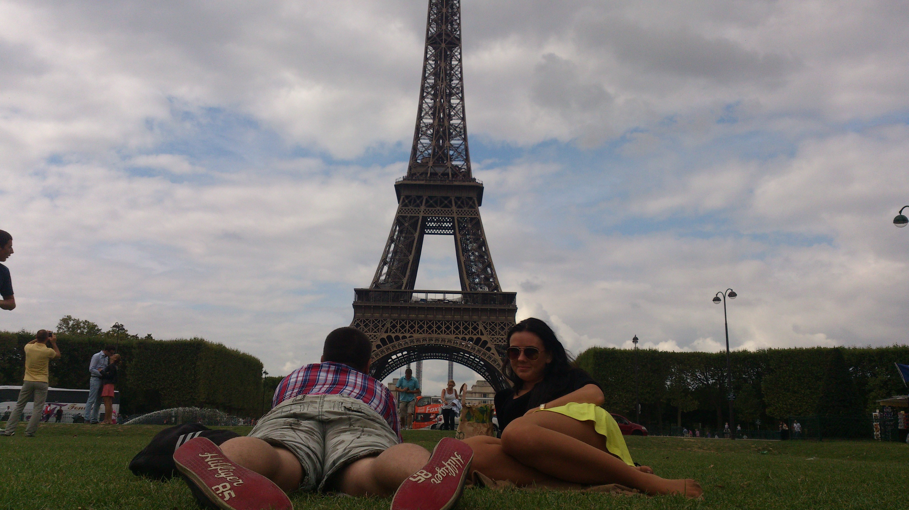

Vitajtaeee na mojej osobnej stránke k predmetu Webové publikovanie
Na tejto stránke nájdete projekty, na ktorých som pracoval alebo pracujem, fotky, pretože medzi moje záľuby patrí fotenie a tiež blog, ktorý som začal písať pri vzniku tohto webu.
Projekty
{% assign sorted_projects_cat = (site.projects | group_by: 'category') %}
{% for category in sorted_projects_cat %}
{% assign sorted_projects = (category.items | sort: 'date_till'| reverse) %}
{% for project in sorted_projects limit:1 %}
{{project.title}}
({{project.date_from|date_to_string}} - {{project.date_till|date_to_string}})
{% endfor %}
{% endfor %}
{% include showMoreButton.html link='/projects/'%}
Galéria

{{image.tittle}}
{% include showMoreButton.html link='/gallery/'%}
Blog
{% for post in site.posts %}
- {{post.title}} ({{ post.date | date_to_string }})
{% endfor %}
{% include showMoreButton.html link='/blog/'%}